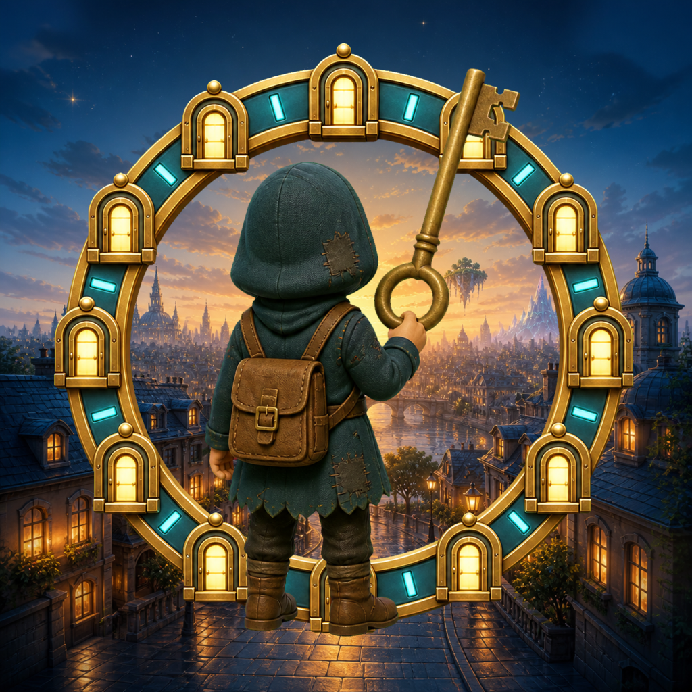
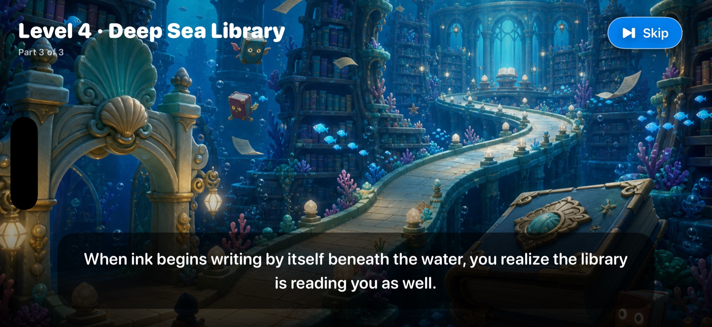
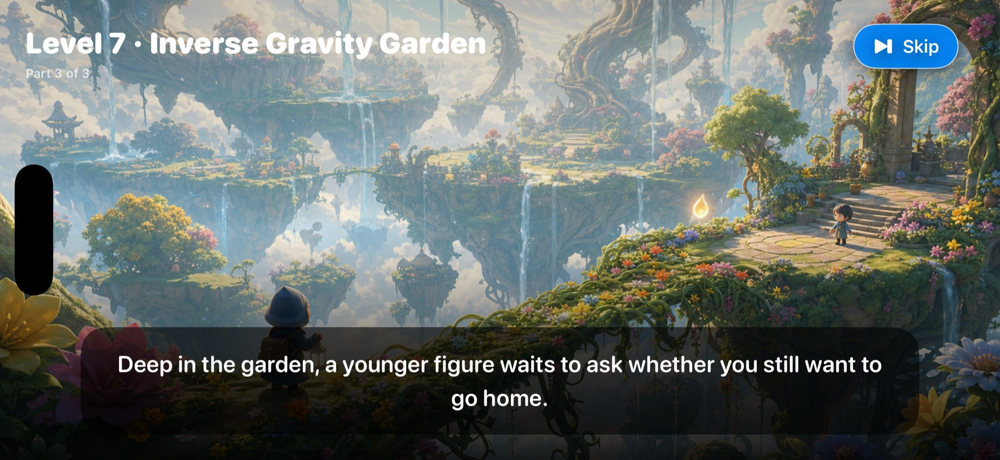
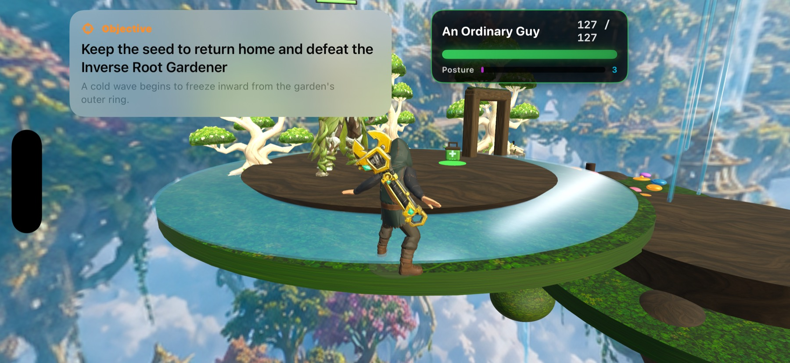
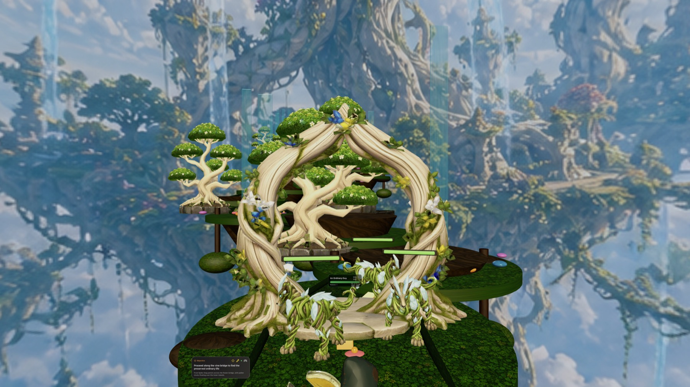

Apple Vision Pro · visionOS 1.0 已上架你在一間木造房間醒來。門後，是十二個不該相連的世界。
看懂敵人的準備動作、離開攻擊路線、在正確時機格擋。收集裝備、解開環境謎題，一步步找回自己，也找到回家的路。

每一扇門，都把世界的規則重新寫一次
旅程從第一間房間開始，接著穿過木鳥城鎮、黃金齒輪世界、深海圖書館、墨水寫成的城市、無面劇場、倒置花園、玻璃冬境等地方。場景不是單純換背景：移動方式、環境危險、解謎節奏、敵人配置與 Boss 戰都會跟著世界改變。

戰鬥的重點不是更快，而是看得更清楚
敵人的近戰、遠程投射物與 Boss 招式都有清楚的準備動作與行進空間。你可以離開軌道、抓準時機格擋，或用裝備改變自己的攻擊與防守方式。玩家與敵人的生命、姿態和目標會維持可讀，讓失敗能被理解，進步也有跡可循。
先看敵人的動作、方向與範圍，不急著把每個按鍵都按下去。
離開攻擊路徑，或在正確時機守住；操作夠準，能以零損傷結束戰鬥。
收集武器與防具、整理配置，讓下一場戰鬥有不同解法。

故事會被記住，也能回頭重看
十二關各有三段開場敘事，完整主線結束後還有五幕片尾。插畫、字幕與語音會依目前語言播放；已看過的故事不會在重玩時強迫重播，但可以從暫停或完成畫面再次開啟。介面與語音支援繁體中文、英文、日文、韓文、德文、法文、西班牙文、義大利文、巴西葡萄牙文與俄文。
visionOS 已上架，其他 Apple 平台持續準備

玩家紀錄留在裝置上
玩家名稱、控制偏好、進度、裝備與儲存檔都保存在裝置本機，可從啟動畫面個別刪除。遊戲不需要帳號，沒有廣告、App 內購買、第三方分析或追蹤。正式 1.0 的高品質語音隨 App 提供；若日後使用選用語音下載，下載內容不包含玩家資料，作業系統語音也可作為替代。
OrdinaryAdventure visionOS 1.0 已於 2026 年 8 月 12 日在 App Store 上架，支援十種介面與語音語言，年齡分級為 12+。目前公開版本適用於 Apple Vision Pro，遊玩需要相容的控制器；沒有廣告、App 內購買或帳號需求。
You wake in a timber room. Beyond the door wait twelve worlds that should never have connected.
Read each enemy's preparation, leave the attack path, and guard at the right moment. Collect equipment, solve environmental puzzles, recover who you were, and find a way home.
Every door rewrites the rules of the world
The journey starts in the first room, then crosses a wooden-bird town, a golden gear world, a deep-sea library, a city written in ink, a faceless theater, an inverse-gravity garden, a glass winter realm, and more. These are not background swaps: movement, hazards, puzzles, enemy formations, and boss rhythm change with each place.
Combat is about seeing more clearly—not pressing faster
Enemy melee strikes, projectiles, and boss attacks have readable windups and defined travel spaces. Leave the path, guard at the right moment, or use equipment to change how you attack and defend. Player and enemy health, posture, and objectives remain visible, so failure can be understood and improvement has a cause.
Watch movement, direction, and range before committing to another action.
Leave the attack path or block at the right moment; precise play can finish a fight without damage.
Collect weapons and protection, then reorganize equipment for a different answer next time.
The story remembers where you were
All twelve levels have three-beat narrated introductions, followed by a five-part ending after the main route. Artwork, subtitles, and voices follow the current language. Completed scenes do not interrupt every replay, but remain available from pause and completion views. The interface and voice set support Traditional Chinese, English, Japanese, Korean, German, French, Spanish, Italian, Brazilian Portuguese, and Russian.
Available on visionOS, with more Apple platforms in preparation
Player records stay on the device
Player name, control preferences, progress, equipment, and save profiles are stored locally and can be deleted individually from the launch screen. The game requires no account and includes no advertising, in-app purchases, third-party analytics, or tracking. Version 1.0 includes its high-quality voices with the app; if optional voice downloads are used later, they will contain no player data, and system speech can remain available as a fallback.
OrdinaryAdventure visionOS 1.0 became available on the App Store on August 12, 2026. It supports ten interface and voice languages and carries a 12+ age rating. The current public version is for Apple Vision Pro and requires a compatible controller, with no advertising, in-app purchases, or account required.